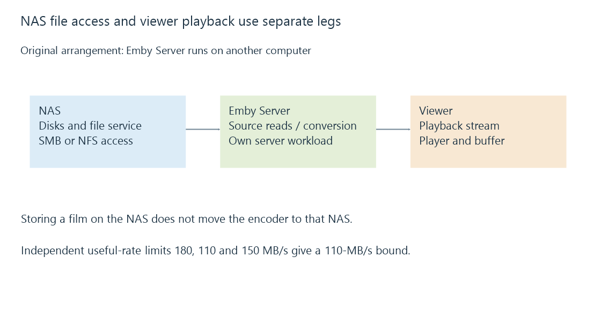

Network-attached storage: files served by another computer
A NAS serves files over a network, so media access depends on its disks, sharing protocol, access policy and connection to the Emby server.
A network-attached storage system is a computer that supplies storage services to other computers. An Emby server can open media on the NAS through a file-sharing protocol such as SMB or NFS.
The NAS reads its own disks and returns file data. The Emby server still performs its own library work and any transcoding. Merely placing a film on a NAS does not move the encoder onto that NAS.
Where the work runs

There are two common arrangements. Emby Server can run on a separate computer with the NAS as a media source, or it can run directly on a supported NAS platform. In the second arrangement, storage and server workloads share the NAS's processor, memory and other resources.
In the first arrangement, a remote viewer's stream may involve both the NAS-to-server connection and the server-to-viewer connection. If those use the same constrained interface, their traffic can compete. A client that is explicitly configured and supported for direct file access is a different path again; an ordinary Emby HTTP stream does not require the viewer to mount the NAS share.
The slowest active part of a read
A simplified sustained-read model uses independent useful-rate limits:
Disk service: 180 MB/s
Network file delivery: 110 MB/s
Client receive path: 150 MB/s
Upper bound: min(180, 110, 150) = 110 MB/s
The figures are teaching assumptions. Actual results include protocol operations, caching, queues and any shared resources. Small operations can be latency-limited even when their combined byte rate is tiny.
For four 40-Mbit/s films, average source payload is 20 MB/s. That comparison suggests capacity in the model, but it does not establish real peak behavior, recording coexistence or fast scans. A scan can produce far more file opens and metadata operations than four long reads.
A reachable NAS is not yet a readable library
| Successful check | What remains unproven |
|---|---|
| The NAS responds on the network | The file-sharing service is available |
| The share is visible | The server process can authenticate |
| The directory opens | Each required file is readable |
| The desktop can play a file | The background service has the same identity and path |
| Emby lists an existing item | The source remains accessible now |
The file-sharing account is usually separate from an Emby viewer account. Share permissions and the NAS's underlying file permissions both influence operations. For NFS, identity mapping and export policy also matter.
Stable names and mounted paths help the library continue to address the same content. During an outage, establish whether the share is truly empty, inaccessible, or absent from the current namespace before treating missing observations as file removals. Unavailable mounts develops those states.
See Also
- SMB file shares: sessions, shares and file operations
- NFS file shares and server-side identity mapping
- Unavailable network mounts and trustworthy library state
- Network throughput and useful delivery rate